Relatar te invita a escribir una historia basada en las imágenes que se muestran.
Se mostrará el teclado en tu tableta cuando toques el recuadro superior
Puedes cambiar todas las imágenes presionando el botón
también puedes cambiar el orden de las imágenes deslizándolas.
El botón  graba una imagen para ser usada en otras aplicaciones, y el boton graba un archivo PDF con tu historia y la imagen.
El boton de audio  prende y apaga la música de fondo.
prende y apaga la música de fondo.
Puedes grabar tu voz contando una historia presionando el boton . El botón se pondrá de color rojo mientras estes grabando, presiona otra vez para finalizar la grabación. Luego puedes escuchar tu historia presionando el botón  .
.
Si quieres saber más acerca de quienes hicieron esta aplicación, presiona aqui: